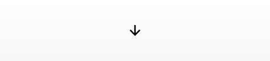

Flow sul patrimonio industriale dal 1920 ad oggi del settore automotive per le famiglie
Rappresentazione del Flow generato
Aziende per comune
Enti e patrimoni coinvolti
Potenziale di valorizzazione di ciascun patrimonio
Tra questi quanti detengono patrimoni fisici, digitali o digitalizzati
Relazioni con il territorio
Sulla mappa, quante aziende ha ogni comune. Nel grafico, le reti attive di ciascun patrimonio: siti, stakeholder ed eventi con cui è collegato.
Fino a dove arriva ciascun patrimonio
L’area d’influenza: da quella locale a quella globale, quanti enti per ciascuna.
Il profilo degli indici
I cinque indici di ciascun ente: più grande il cerchio, più alto il punteggio. Sulla mappa ogni ente ha il colore del suo indice più alto.
